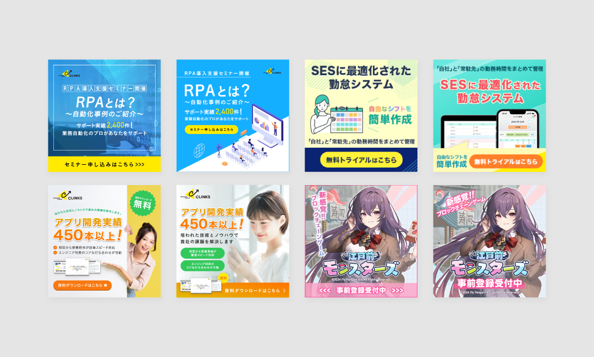
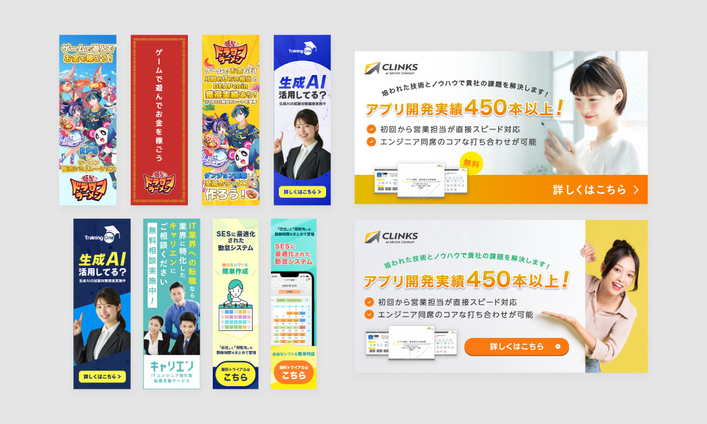
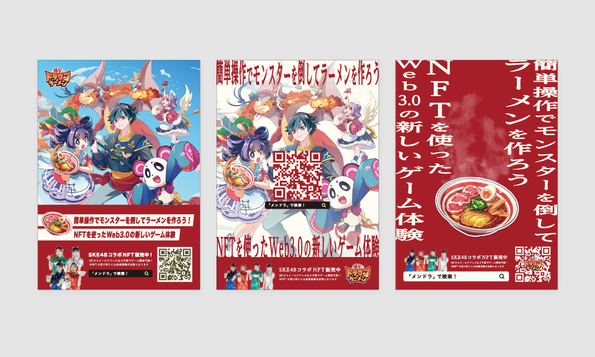

GRAPHIC
広告バナー

プロジェクトの概要
自社サービスの認知拡大およびリード獲得を目的とした広告バナーの制作を担当。媒体やターゲットに応じて複数パターンのバナーを制作し、訴求内容やビジュアルの最適化を行いました。配信後も数値をもとに改善を繰り返し、継続的なパフォーマンス向上に取り組んでいます。主にFacebook、Google、漫画アプリ、ゲームサイトへバナー配信。
課題と解決策
広告バナーでは限られた表示領域と短時間の接触の中で、興味喚起とクリックを促す必要がある一方、訴求内容が曖昧だとクリックに繋がらない課題がありました。そのため、ターゲットに合わせて訴求軸やコピーを整理し、複数パターンのバナーを制作。ビジュアルやコピーの違いによる反応を検証しながら、クリックされやすい構成へと改善を行いました。
成果
複数パターンのバナー制作と改善を通じて、広告におけるクリック率向上および流入増加に繋がるクリエイティブを制作。配信結果をもとにした改善サイクルを回すことで、継続的にパフォーマンスの最適化を実施しました。
担当領域
訴求設計／コピー／デザイン／レイアウト設計／画像制作／ABテスト／クリエイティブ改善
使用したツール

